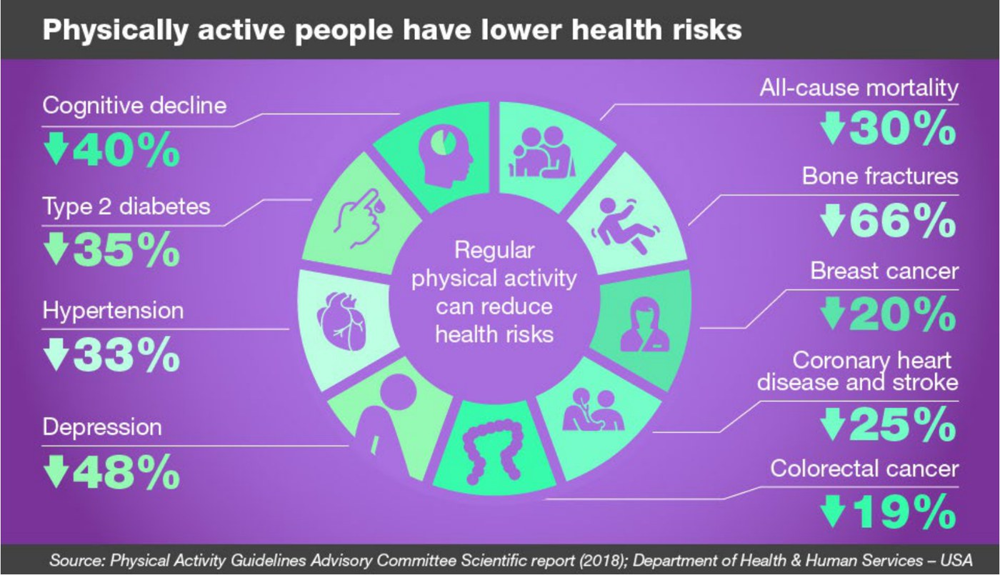
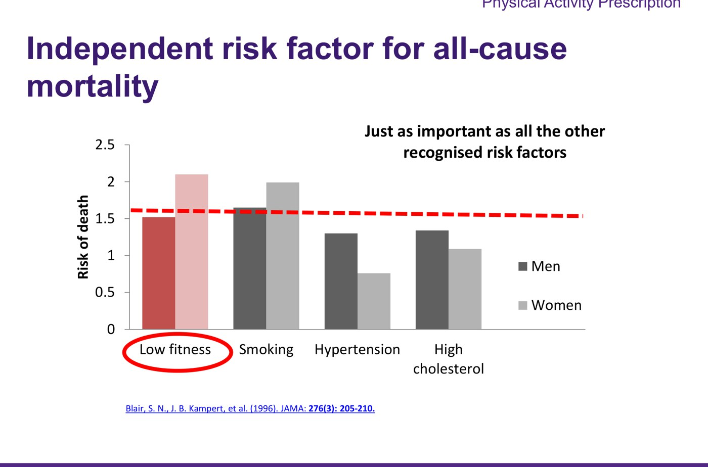
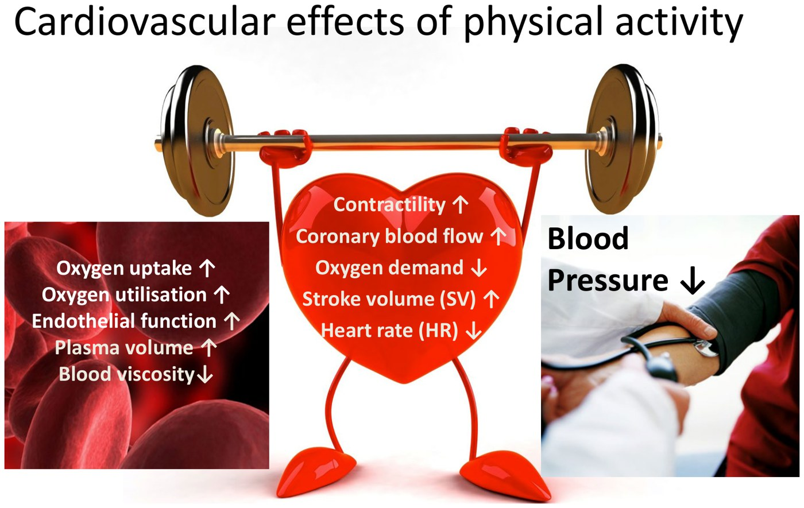
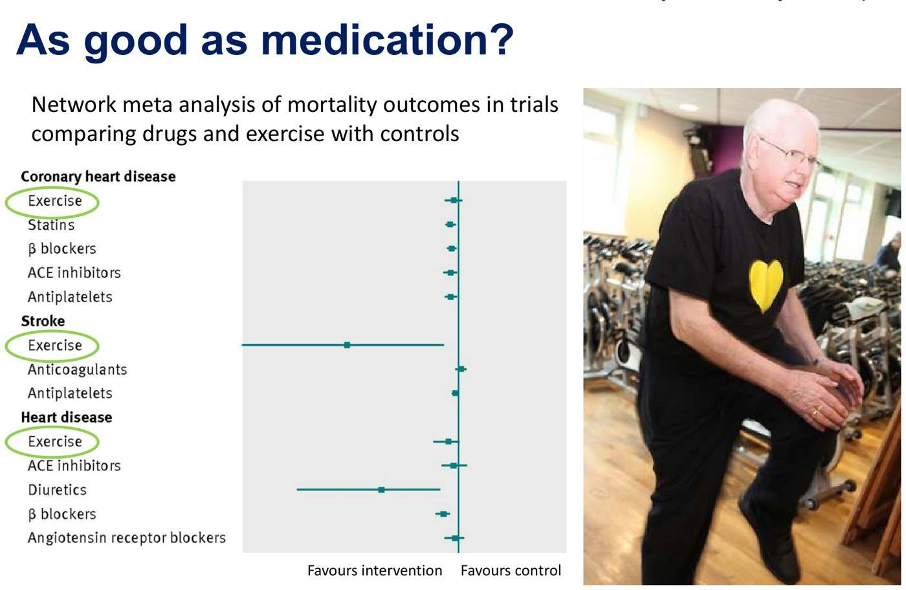
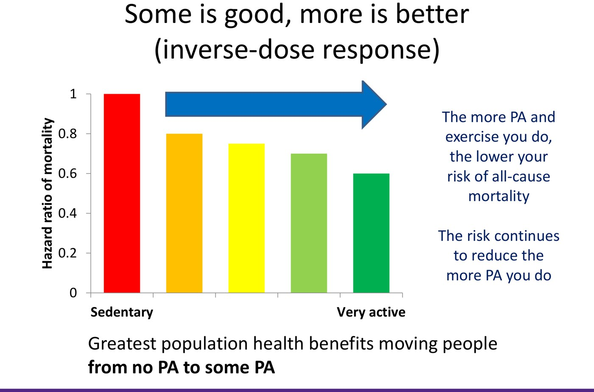
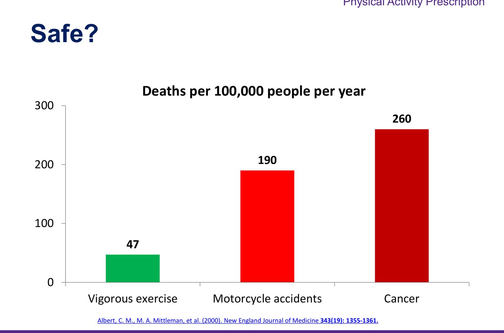
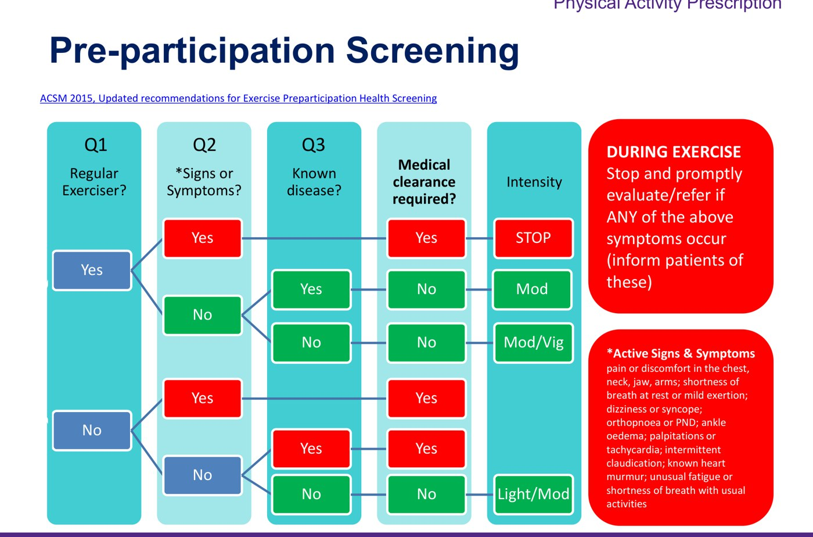
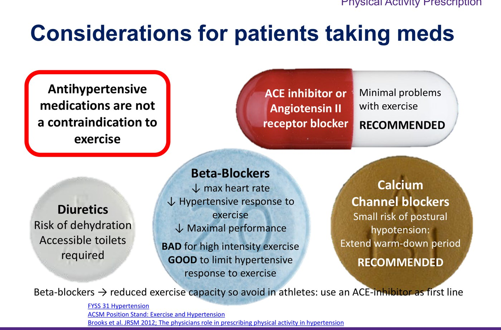

Physical Activity Prescription
- Prescribe it like a drug: benefits, side effects, risks and a dose. Inactivity is an independent risk factor for death, as big as smoking, hypertension or high cholesterol (the WHO ranks it 4th). Regular activity cuts all-cause mortality by about a third, and exercise lowers blood pressure about as well as antihypertensives.
- Canadian guidelines (adults): 150 minutes a week of moderate-to-vigorous aerobic activity plus muscle and bone strengthening 2 days a week. Some is good, more is better, and the biggest gain is from nothing to something.
- Intensity by the talk test: can sing = light, can talk = moderate, can't hold a conversation = vigorous. Heart rate is unreliable on a beta-blocker.
- 8 absolute contraindications: new or uncontrolled arrhythmia, resting or uncontrolled tachycardia, resting SBP > 180 or DBP > 100, symptomatic hypotension, unstable (crescendo) angina, acute or unstable heart failure, unstable diabetes, acute febrile illness.
- Write it with FITT (Frequency, Intensity, Time, Type) after the 3 As (Ask, Advise, Act). In hypertension: long warm-up and cool-down; avoid very heavy resistance, isometric, overhead and lying-down exercise. ACE inhibitors and ARBs suit exercisers best.
Learning Objectives
- Summarize the health benefits of regular physical activity: physiological effects and effects on morbidity and mortality.
- Outline the Canadian Physical Activity Guidelines, distinguish light, moderate and vigorous activity, and give ways to hit the right intensity.
- List and categorize the relative and absolute contraindications to exercise.
- Construct a safe, specific exercise prescription using the FITT principle, taking the patient's medical and socioeconomic situation into account.
Dr. Jane Thornton (Sport and Exercise Medicine, Fowler Kennedy), three recordings (about 40 minutes) and five practice questions. Exercise as treatment also runs through 10.7 chronic pain (active vs passive therapy).
The Case: Nancy
68-year-old woman
Recently widowed and now sedentary; she used to love walking her dog on the trails. She's worried about falling. New, untreated hypertension (140/85). Her father died after an MI at 70; her mother broke a hip at 73. How would you write her a physical activity prescription? Think benefits, side effects, risks and dose, as for any drug.
Health Benefits

Risk reductions with regular activity. From the deck.
Low fitness predicts death as strongly as smoking, hypertension or high cholesterol (Blair 1996). From the deck.| System | What activity does |
|---|---|
| Musculoskeletal | 55% fewer hip fractures, mostly through fewer falls (strength, proprioception, coordination, gait, reaction time). Bone density rises only 1–3% with high-impact training, but the bone's architecture strengthens. |
| Heart | Contractility ↑, coronary blood flow ↑, oxygen demand ↓, stroke volume ↑, resting heart rate ↓ |
| Blood and vessels | Oxygen uptake and utilisation ↑, endothelial function ↑, plasma volume ↑, blood viscosity ↓, resting blood pressure ↓ (it rises transiently during exercise) |
| Cardiovascular disease | Getting a patient active is as important as helping them quit smoking or lowering their blood pressure and cholesterol |

The cardiovascular effects. From the deck.
As good as medication? In coronary disease, stroke and heart failure, exercise's mortality benefit stacks up with the drugs (Naci & Ioannidis, BMJ 2013). From the deck.A 2018 network meta-analysis (391 trials) found exercise lowers systolic blood pressure about as much as antihypertensive drugs, with no head-to-head trial yet. Many patients would rather not start a pill but don't know where to begin with lifestyle, so offering exercise is patient-centred. There's evidence for activity as treatment in dozens of conditions, from depression and dementia to COPD, osteoarthritis and type 2 diabetes.
The Guidelines and Intensity
Physical activity is any movement; exercise is planned, structured activity to build fitness. They're used interchangeably here.
| Canadian guidelines, adults | Detail |
|---|---|
| Aerobic | At least 150 minutes a week of moderate-to-vigorous activity. Bouts no longer need to be 10 minutes; even 5 minutes counts. |
| Strength | Muscle and bone strengthening with the major muscle groups at least 2 days a week. The part people forget. |
| More | More activity gives more benefit; also “build strength, sit less, improve balance”. The WHO and US guidelines say the same. |
| Intensity | How it feels | Talk test | Examples |
|---|---|---|---|
| Light | Barely raises breathing | Can sing | Gardening, walking to the printer |
| Moderate | Breathing and heart rate up; warmer, may sweat if hot or humid | Can talk | Brisk walking, stair climbing, cycling, dancing, swimming |
| Vigorous | Breathing and heart rate well up | Can't keep a conversation going | Sport, running, aerobics, cardio machines |
| Muscle strengthening | A weight heavy enough that no more than 10–15 repetitions are possible | — | Sit-to-stand, stairs, heavy gardening, carrying shopping, weights, bands, push-ups, soup-can curls |
The same brisk walk can be light for one person and vigorous for another, so judge intensity by the person, not the activity. Ways to track it: the talk test (simplest for beginners), rate of perceived exertion, METs, or heart rate, which a beta-blocker blunts.

Taking an Exercise History
What they enjoyed (school, work, leisure, active commuting); solo or group, indoors or outdoors; barriers; goals (playing with grandchildren, not getting breathless on stairs, cutting risk after an MI or cancer, or just looking good: meet them where they are).
Current symptoms and past medical history. Often the most important question.
Is It Safe? Risk and Contraindications

Vigorous exercise is relatively safe: 47 deaths per 100,000 a year vs 190 for motorcycle accidents. Most exercise deaths are in people without baseline fitness. From the deck.| Cardiovascular risk | Advice |
|---|---|
| Asymptomatic, low risk | Self-directed activity |
| Asymptomatic, low risk but significant risk factors (e.g. high BP) | Start at low-to-moderate intensity |
| Asymptomatic, high risk | Consider cardiac investigations first (ECG) |
| Symptomatic cardiovascular disease | Supervised initial exercise, or refer to an exercise specialist (stress testing) |

| Absolute contraindications to exercise (cardiovascular disease) |
|---|
| 1. New or uncontrolled arrhythmia |
| 2. Resting or uncontrolled tachycardia |
| 3. Resting SBP > 180 mmHg or DBP > 100 mmHg |
| 4. Symptomatic hypotension |
| 5. Unstable or crescendo angina |
| 6. Acute or unstable heart failure |
| 7. Unstable diabetes |
| 8. Acute febrile illness |
The rule behind the list: anyone with unstable or uncontrolled symptoms is reviewed before starting. Side effects of exercise are real but outweighed by the benefits: delayed-onset muscle soreness, aches and pains, and acute or overuse injuries.
Writing the Prescription
| The 3 As | What to do |
|---|---|
| Ask | About current activity, and whether they know the benefits of moving more |
| Advise | On the benefits, especially for their own conditions |
| Act | Signpost to help and support: handouts, community programs, free classes, online resources |
| FITT | Example for 150 minutes |
|---|---|
| Frequency | 5 times a week (aerobic) |
| Intensity | Sing (low), talk (moderate), conversation impossible (high) |
| Time | 30 minutes |
| Type | What they'll enjoy: walking, cycling, dancing, swimming, jogging |
Patients want something tangible and personal: write it down like a prescription.
| Hypertension: do | Hypertension: don't |
|---|---|
| Control BP > 180/100 with medication before exercising | Very strenuous resistance training (left ventricular pressure can pass 300 mmHg) |
| A long warm-up (15 min) and cool-down (10 min) | Vigorous exercise with known left ventricular hypertrophy |
| Keep the feet moving afterwards (blood pools if you stop dead) | Lying-down exercises (postural hypotension) |
| Protect the joints if obese or inactive | Isometric exercises (e.g. wall sits; they push BP up more) |
| One rest day a week | Overhead exercises |

Antihypertensives and exercise. From the deck.| Drug | With exercise |
|---|---|
| ACE inhibitor / ARB | Minimal problems: recommended; first line in athletes |
| Calcium channel blocker | Small risk of postural hypotension: extend the cool-down. Recommended |
| Beta-blocker | ↓ max heart rate and performance: bad for high intensity (avoid in athletes; banned in some sports), but limits the hypertensive response |
| Diuretic | Dehydration; needs a toilet nearby |
Antihypertensives are not a contraindication to exercise.
Back off if exercise brings severe pain, pain that doesn't settle to the usual level afterwards, more night pain, or more joint swelling. Follow up at about 6 weeks.
At 140/85 and asymptomatic she can be self-directed, starting at low-to-moderate intensity and building slowly. Benefits to share: fewer falls and hip fractures, lower blood pressure, lower cardiovascular risk. F: most days, I: moderate by the talk test, T: working up to 30 minutes, T: walking her dog (her preference), plus strength and balance 2 days a week (sit-to-stands, stairs). Warm up and cool down, and stop and call if she gets chest pain, breathlessness or dizziness.
The Doctor's Role
| Why it's worth 30 seconds |
|---|
| A physician's prescription is cost-effective |
| Only about 25% of physicians counsel on activity, but 92% of patients say they'd follow their doctor's advice |
| A prescription raises a patient's activity by about 10%; across Canada that could save about $2 billion a year |
| In hospital, patients lose function lying in bed: get them dressed and moving (#EndPJparalysis), and track activity (one hospital used about 1000 steps a day as a discharge marker) |
Most effective approach: know why it works and why it matters in your specialty; ask about history and preferences; focus on behaviour change; use shared decision-making; signpost to evidence-based resources, remembering the social determinants of health (a gym or trainer may be unaffordable, and walking outside gets most of the benefit); and follow up.
Practice Questions
What the module asks
Not an absolute contraindication? → A resting SBP of 160 (the cut-off is > 180/100); new arrhythmia, symptomatic hypotension, crescendo angina and acute heart failure all are. Least useful way to track moderate intensity on a beta-blocker? → Heart rate as a percentage of maximum. Physical inactivity is the WHO's ___ greatest risk factor for death? → 4th. The Canadian adult guideline? → 150 minutes of moderate-to-vigorous activity a week and 2 sessions of resistance or muscle and bone strengthening. Two cardiovascular effects? → the key is oxygen uptake ↑ and endothelial function ↑. The distractors get blood viscosity (it falls), coronary flow (it rises) and blood pressure (it falls at rest and rises during exercise) backwards. “Stroke volume ↑ and heart rate ↓” also matches the slide, but it isn't the keyed answer.
Built from Dr. Jane Thornton's “Physical Activity Prescription” deck, its three recordings and the module's practice questions. Photographs and media screenshots are left out. Notes: the captions call the talk test the “torque test”, and the recording says calcium channel blockers carry a small risk of postural “hypertension”; the slide's hypotension is right. The slide headed “Objective 3” repeats objective 4's wording. Nancy's prescription is my worked example from the lecture's pieces, not a slide.